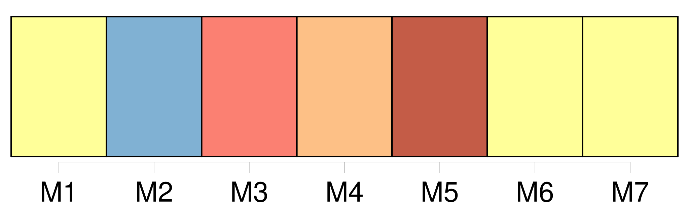
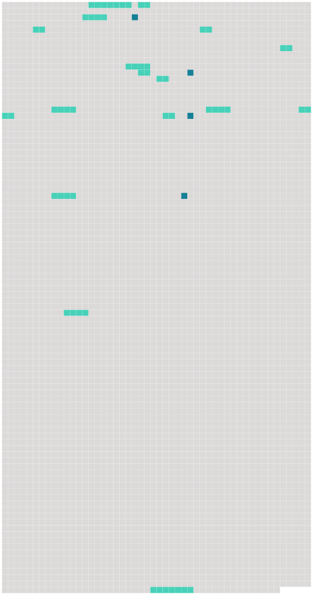

Longueur nb maillons : 20 mentions |
 |
Quelle que soit la nature des faits ou des délits qui donneront lieu à [la demande en divorce pour cause déterminée] , [cette demande] ne pourra être formée qu'au tribunal de l'arrondissement dans lequel les époux auront leur domicile. [3 phrases]
[Toute demande en divorce] détaillera les faits : [elle] sera remise, avec les pièces à l'appui, s'il y en a, au président du tribunal ou au juge qui en fera les fonctions, par l'époux demandeur en personne, à moins qu'il n'en soit empêché par maladie ; auquel cas, sur sa réquisition et le certificat de deux docteurs en médecine ou en chirurgie, ou de deux officiers de santé, le magistrat se transportera au domicile du demandeur pour y recevoir [sa demande] [1 phrases] Le juge, après avoir entendu le demandeur, et lui avoir fait les observations qu'il croira convenables, paraphera [la demande] et les pièces, et dressera procès-verbal de la remise du tout en ses mains. [4 phrases]
Au jour indiqué, le juge fera aux deux époux, s'ils se présentent, ou au demandeur, s'il est seul comparant, les représentations qu'il croira propres à opérer un rapprochement : s'il ne peut y parvenir, il en dressera procès-verbal, et ordonnera la communication de [la demande] et des pièces au commissaire du Gouvernement, et le référé du tout au tribunal. [4 phrases]
Le demandeur, en vertu de la permission du tribunal, fera citer le défendeur, dans la forme ordinaire, comparaître en personne à l'audience à huis clos dans le délai de la loi ; il fera donner copie, en tête de la citation, de [la demande en divorce] et des pièces produites à l'appui. [1 phrases]
À l'échéance du délai, soit que le défendeur comparaisse ou non, le demandeur en personne, assisté d'un conseil s'il le juge à propos, exposera ou fera exposer les motifs de [sa demande] ; il représentera les pièces qui [l'] appuient, et nommera les témoins qu'il se propose de faire entendre. [1 phrases] Si le défendeur comparaît en personne ou par un fondé de pouvoir, il pourra proposer ou faire proposer ses observations, tant sur les motifs de [la demande] que sur les pièces produites par le demandeur et sur les témoins par lui nommés. [9 phrases]
En cas qu'elles soient trouvées concluantes, [la demande en divorce] sera rejetée : dans le cas contraire, ou s'il n'a pas été proposé de fins de non-recevoir, [la demande en divorce] sera admise. [1 phrases] Immédiatement après l'admission de [la demande en divorce] , sur le rapport du juge commis, le commissaire du Gouvernement entendu, le tribunal statuera au fond.
Il fera droit à [la demande] , si [elle] lui paraît en état d'être jugée ; sinon il admettra le demandeur à la preuve des faits pertinens par lui allégués, et le défendeur à la preuve contraire. [27 phrases] Lorsque [la demande en divorce] aura été formée pour cause d'excès, de sévices ou d'injures graves, encore qu' [elle] soit bien établie, les juges pourront ne pas admettre immédiatement le divorce. [34 phrases]
L'action en divorce sera éteinte par la réconciliation des époux survenue soit depuis les faits qui auraient pu autoriser cette action soit depuis [la demande en divorce] [86 phrases]
Dans les cas où il y a lieu à [la demande en divorce pour cause déterminée] , il sera libre aux époux de former demande en séparation de corps. |
 |
Il est possible de télécharger la ressource sur la page Ortolang |
Si vous avez des questions ou vous voyez des erreurs, merci d'envoyer un mail à silvia.federzoni89@gmail.com |